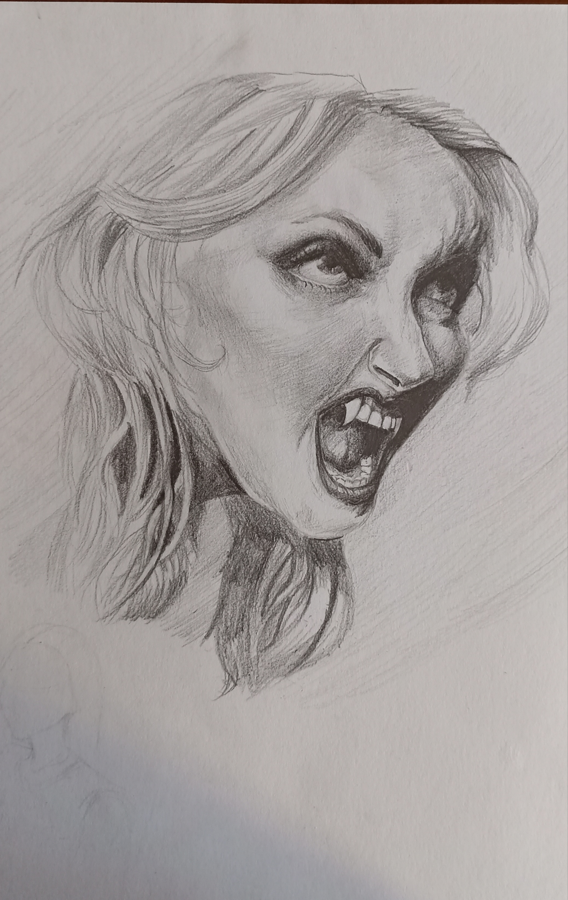
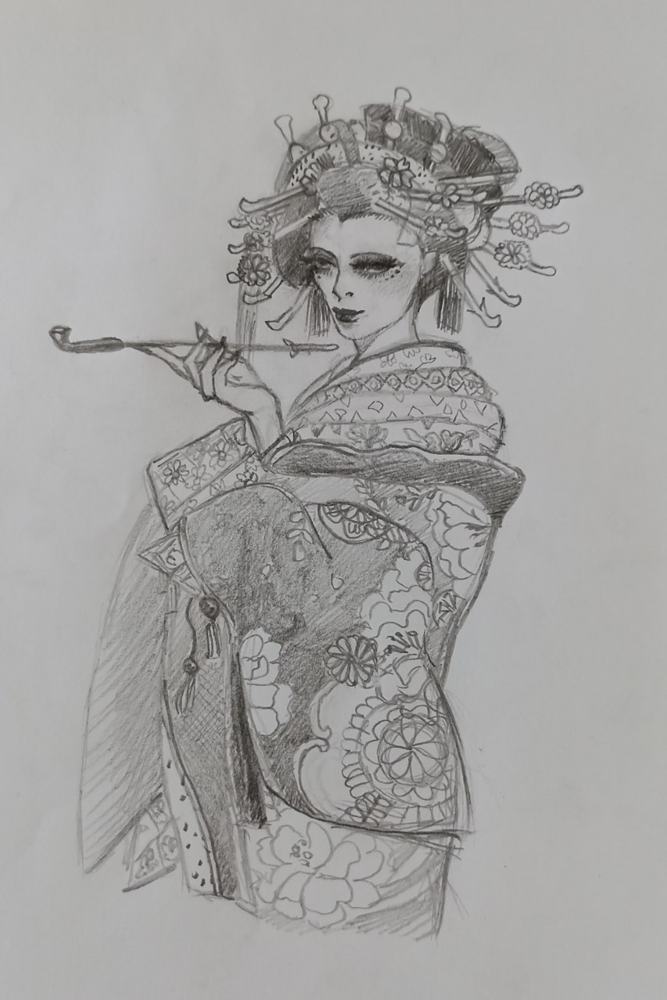
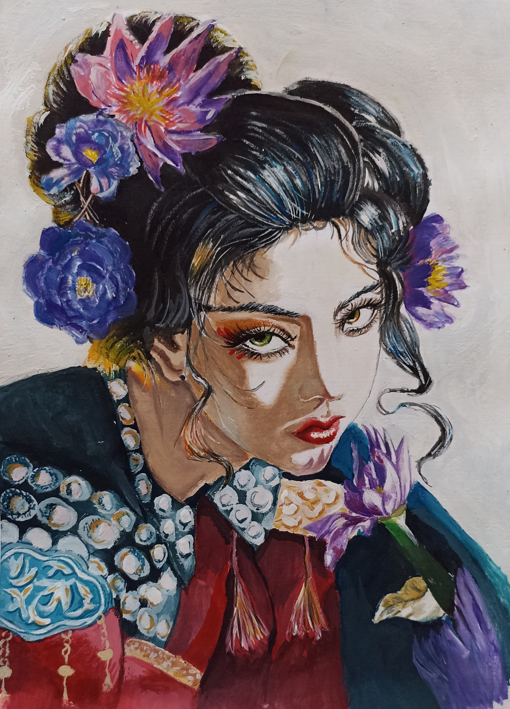

Визитная карточка
Анастасия Жарова
Город: Белгород
Телефон: 8 800 555 35 35
Место обучения: ОГАПОУ "Белгородский индустриальный колледж"
Сама я из Донецка, там закончила 9 классов, после поступила в Белгородский индустриальный колледж на специальность веб-разработчик. Рисованием начала заниматься конкретно с 11 лет. Всё началось с того, как я увидела в одном из видео реалистичное рисование глаза, я очень загорелась тем, чтобы рисовать так же. После того как освоила глаза, всё начало развиваться дальше и дальше.
Мои навыки
- Портреты в стиле : реализм и семиреализм
- Дизайн персонажей
- Концепт арт
- Иллюстрации
Некоторые из работ


